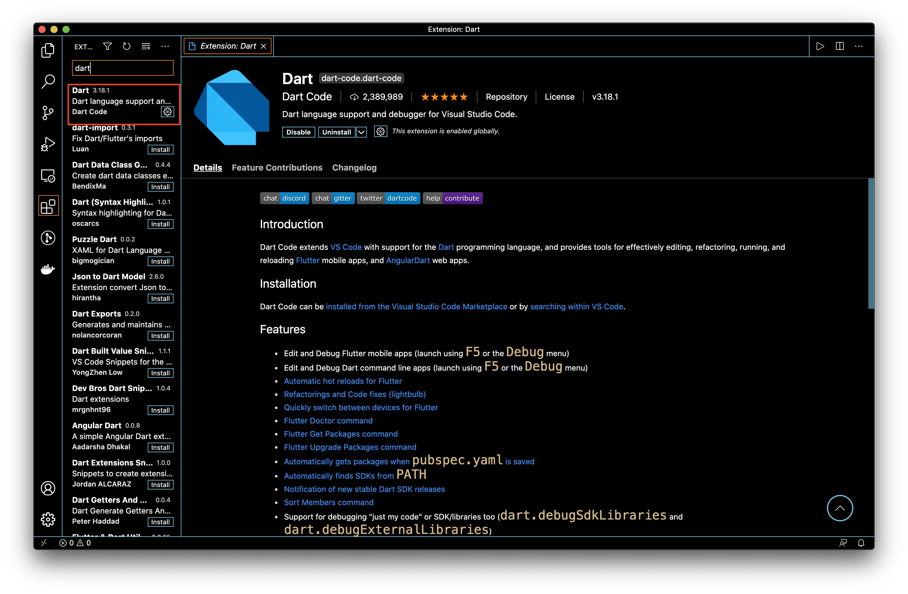
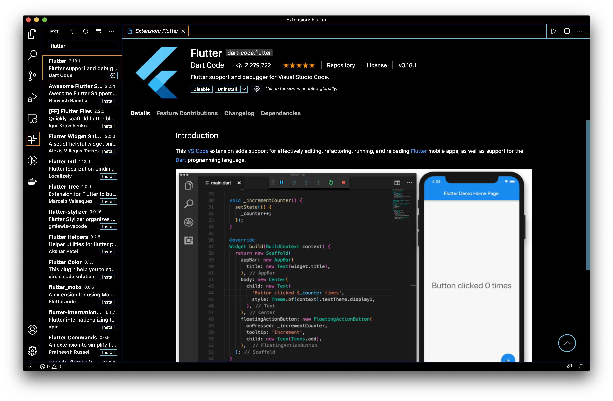
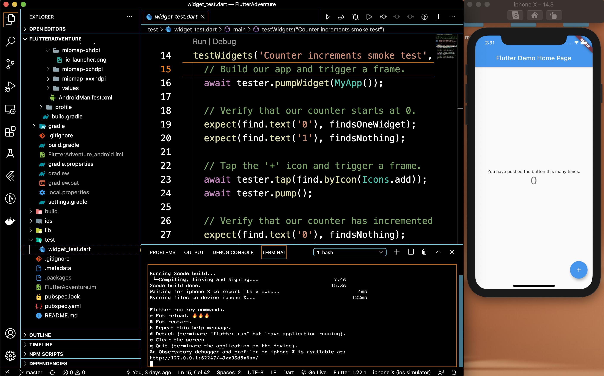
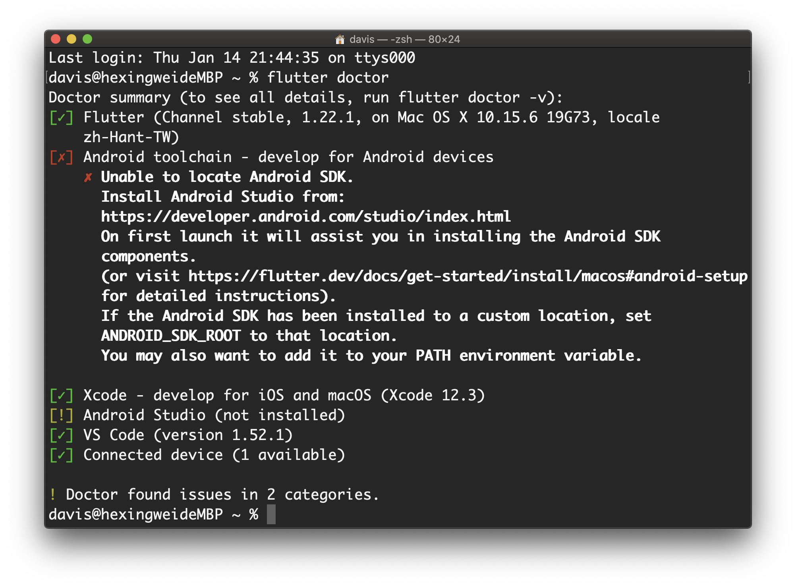

Install Flutter （macOS）
Get the Flutter SDK
- 下載以下安裝包以獲取Flutter SDK的最新穩定版本:
flutter_macos_1.22.5-stable.zip
將文件打開到所需位置
1
2$ cd ~/development
$ unzip ~/Downloads/flutter_macos_1.22.5-stable.zip將Flutter工具添加到您的路徑：
1
$ export PATH="$PATH:`pwd`/flutter/bin"
如果路徑加入後會消失的話可以參考一下步驟：
開啟終端機後到達根目錄然後打開zshrc（如果因權限問題無法修改可輸入
sudo vim .zshrc）1
2$ cd ~
$ vim .zshrc你也可以設定
bash或其他的終端機。
- 輸入 i 來新增路徑你的
Flutter(/bin:/Library/flutter/bin)安裝路徑在.bin:$PATH/後面，例如：1
export PATH="$HOME/.yarn/bin:$HOME/.config/yarn/global/node_modules/.bin:$PATH/bin:/Library/flutter/bin"
輸入完成後, 按下
esc然後:wq儲存
- 檢查是否成功設置
將設置的終端機關閉後重新開器一個新的終端機來檢查路徑是否設置成功。
1
$ which flutter
設置 VSCdoe
安裝VSCode的Dart套件包。

安裝VSCode的Flutter套件包。

設置 XCode
安裝Xcode的最新穩定版本（使用Web下載或Mac App Store）。
通過從命令行運行以下命令，將Xcode命令行工具配置為使用新安裝的Xcode版本：
1
2$ sudo xcode-select --switch /Applications/Xcode.app/Contents/Developer
$ sudo xcodebuild -runFirstLaunch通過一次打開Xcode並
sudo xcodebuild -license從命令行確認或運行來確保Xcode許可協議已簽署 。
:::info
使用Xcode，您將能夠在iOS設備或模擬器上運行Flutter應用。
:::
設置 模擬器
要準備在iOS模擬器上運行和測試您的Flutter應用，請執行以下步驟：
在終端機中輸入以下命令
1
$ open -a Simulator
點擊模擬器右鍵，選擇Device->IOS->選擇一個模擬器安裝。（建議iPhone 5s以上）
安裝完後就開著
Create the app
Create the app
首先創建一個新的專案，他會生成flutter所有需要的檔案。
1 | $ flutter create my_app_name |
接著檢查設備確認與設備連線，通常他創建完後會直接幫你執行。
1 | $ flutter devices |
:::info
1 connected device:
iphone X (mobile) • 3E841537-934D-4DBE-933A-3E1C9A5D727F • ios •
com.apple.CoreSimulator.SimRuntime.iOS-14-3 (simulator)
:::
執行APP如下面命令，，成功後的畫面如下:
1 | $ flutter run |

Run flutter doctor
運行以下命令以查看是否需要安裝任何依賴項才能完成設置，由於我沒有裝Android所以顯示未安裝成功。
1 | $ flutter doctor |
